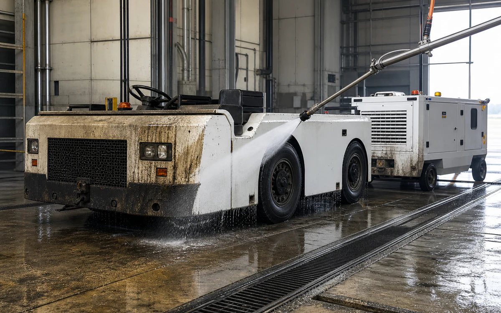
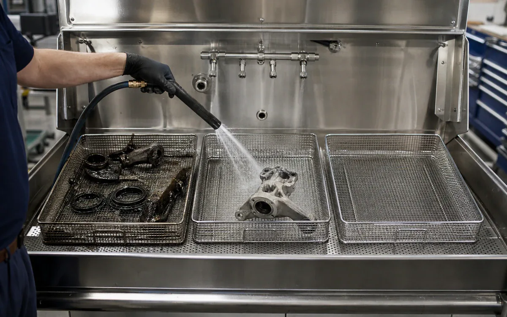
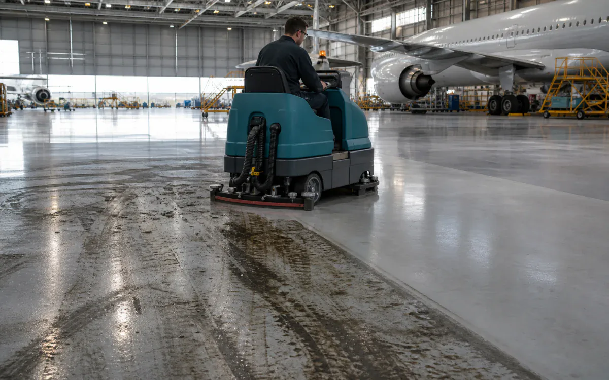

Industries › Aviation - FBOs, MRO, Airports
Clean aviation equipment without being rough on the finish.
CR HD cuts through hydraulic oil and carbon, Neutral cleans sensitive finishes, and AlumiBrite brings dull aluminum back to life.
- CleanGround-support equipment, shop floors, wheel-well tooling, engine stands, and approved aluminum or coated parts
- RemoveHydraulic oil, lubricating grease, carbon film, rubber transfer, and ramp grime
- Start withPre-rinse gently, apply the right degreaser, brush where needed, and rinse clean
- ProductsVertKleen CR HD, VertKleen Neutral, VertKleen AlumiBrite
- Before you startRead the label and SDS, then try a small area first
- See products, first-test plan, and results
Cleaning products for Aviation - FBOs, MRO, Airports.
One focused product set helps crews protect finishes and turn equipment around faster.
See VertKleen results


Recommended
VertKleen products for Aviation - FBOs, MRO, Airports.
Match the cleaner to the mess, surface, and way your team cleans.
Where VertKleen fits
Wash oil, grease, and exhaust grime from ground equipment and approved aircraft-area parts.
- Cleaning job
- Wash oil, grease, and exhaust grime from ground equipment and approved aircraft-area parts.
- Equipment and surfaces
- Ground-support equipment, shop floors, wheel-well tooling, engine stands, and approved aluminum or coated parts
- What needs to come off
- Hydraulic oil, lubricating grease, carbon film, rubber transfer, and ramp grime
- Products to start with
- VertKleen CR HD, VertKleen Neutral, VertKleen AlumiBrite
- How to clean
- Pre-rinse gently, apply the right degreaser, brush where needed, and rinse clean
- What to compare
- Finished result, crew time, product, water, passes, downtime, and repeat work.
Labels & guides
Download current public product files.
Try before you switch